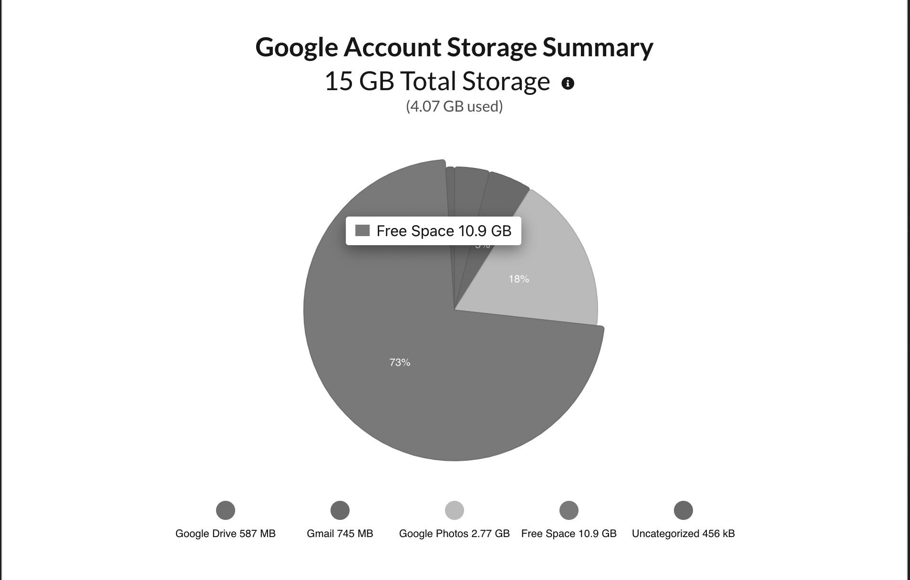
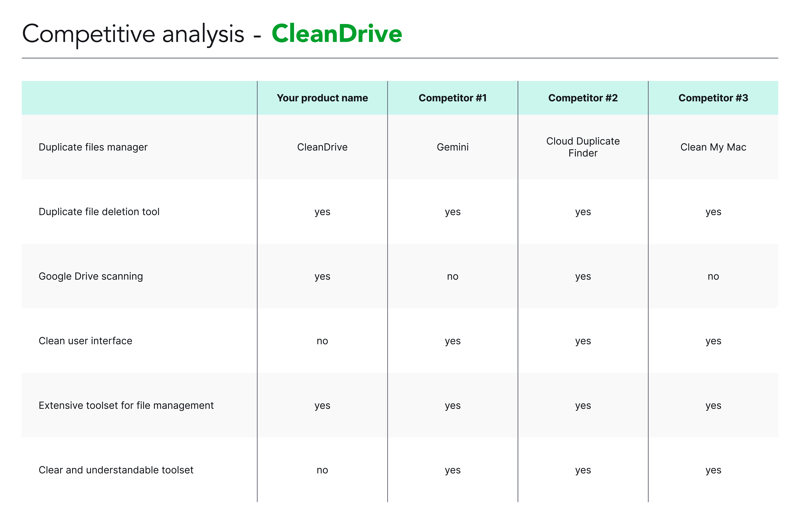
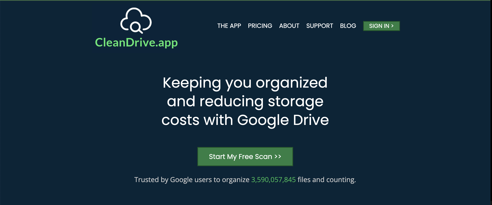
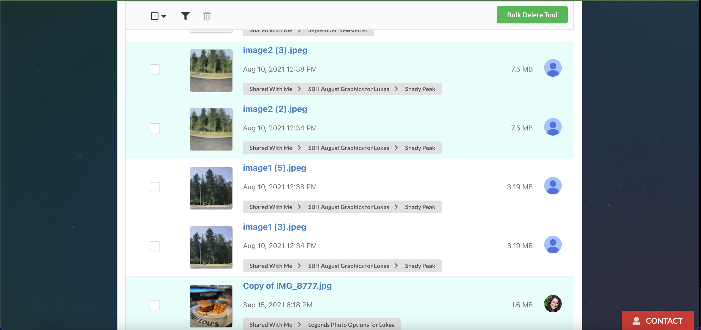
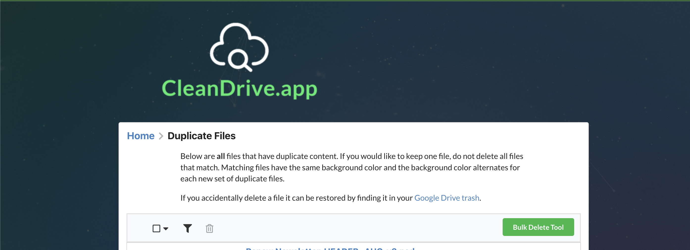
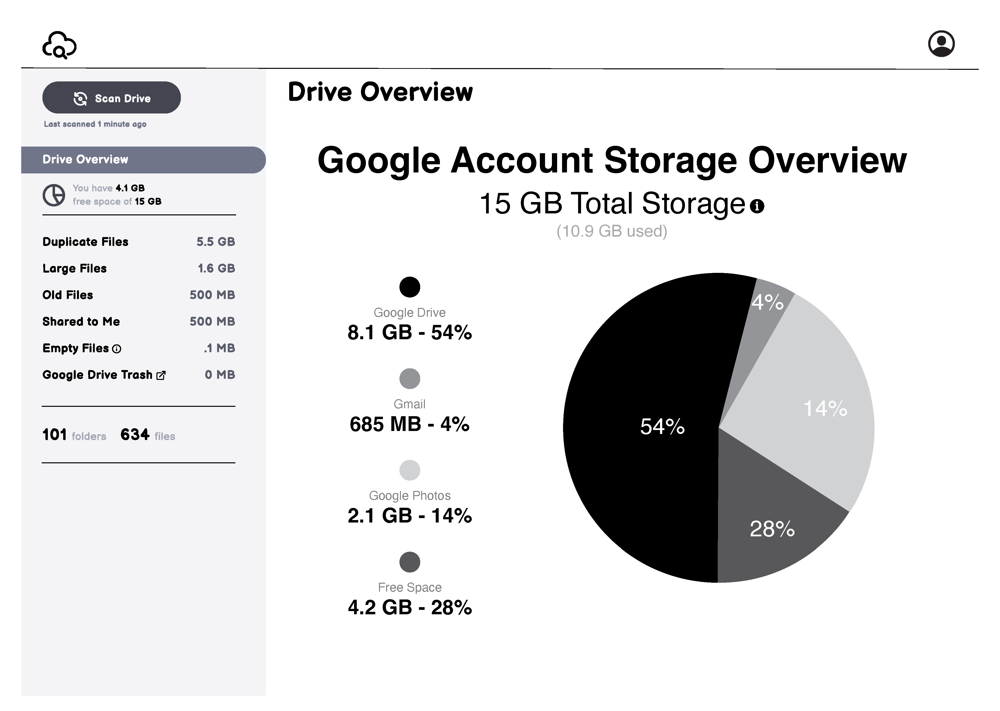
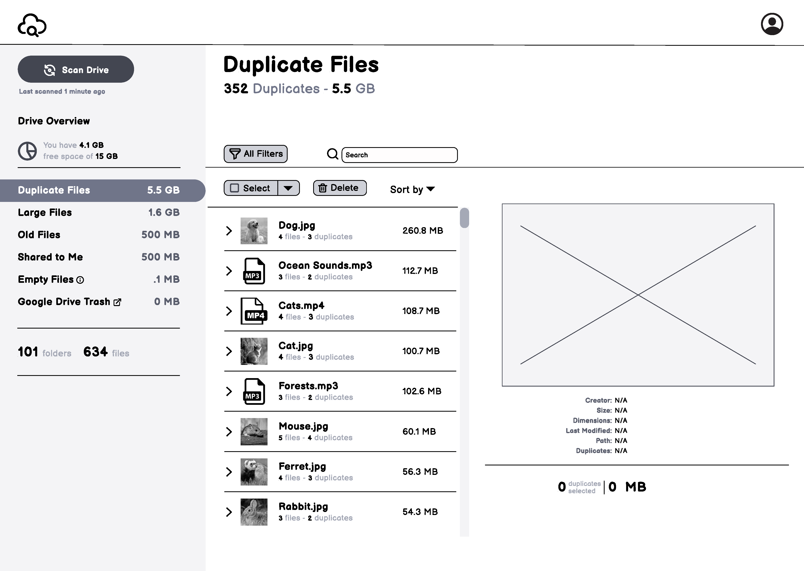
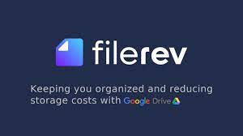

Reimagining the IA to help users better understand their Google Drive storage allocation. Now called Filerev.
CleanDrive (now Filerev) was built in 2021 to help Google Drive users understand and manage their storage. Built by an engineer, it lacked a UX perspective. Users found it cumbersome despite a genuinely strong feature set.
The founder wanted to reduce friction across the product. I led a full 6-week sprint: user research, IA redesign, wireframing, usability testing, and a founder presentation. The time constraint meant choosing methodologies deliberately. No padding, no box-checking.

App Store reviews were thin on UI-specific complaints, so I relied on the founder's direct user feedback alongside my own product audit. Two areas stood out immediately: long scrolling to reach individual file managers, and a bulk delete tool that made users uncertain whether their original files would survive deletion.
A competitive analysis against CleanMyMac, Cloud Duplicate Finder, and Gemini showed CleanDrive matched or exceeded competitors on features but fell behind on visual clarity and structural layout.

Competitive analysis: CleanDrive matched competitors on features but fell behind on layout clarity
A heuristic evaluation confirmed the structural issues. Access to file managers required excessive scrolling. CTAs lacked hierarchy. The duplicate file manager's toolset was opaque. Contrast between file types was insufficient for quick scanning.



5 user interviews validated the problem. Key findings:
The primary fix was a left navigation panel to replace the long-scroll layout. This gave users a persistent map of the product and cut the number of steps to reach any section. Visual influence came primarily from CleanMyMac and Gemini. Both demonstrated that a clean, simple layout could carry a powerful toolset without overwhelming the user.
A story map kept scope under control throughout the sprint. Under deadline pressure it became the north star that prevented scope drift.

Story map: kept sprint scope defined and prevented feature drift under deadline pressure
The duplicate files manager got a full layout rethink: clearer file pair comparison, better action hierarchy, and explicit labeling on destructive actions to eliminate the "will this delete my original?" confusion the founder had flagged.


5 participants tested the lo-fi prototype. None had used CleanDrive before, which limited direct before/after comparison. Despite that, results were strong across the board:

I presented findings to the founder over Zoom. He appreciated the research but pushed back on the scope of visual change. His concern: users had built habits around the current layout, and a full redesign during active operations carried real business risk.
We compromised. The hi-fi was completed as a record and a potential future pitch. CleanDrive didn't ship the redesign at the time. It has since rebranded as Filerev with structural changes that reflect the direction of this work.

Real clients add pressure that classroom projects don't. The sprint format forced me to prioritize methodologies that actually moved the research forward. The story map became essential late in the project when I lost track of scope under deadline stress. Having that north star written down saved the timeline.
The most important lesson: a technically sound redesign can still be the wrong delivery at the wrong time. Reading the business situation is part of the UX job, not separate from it.